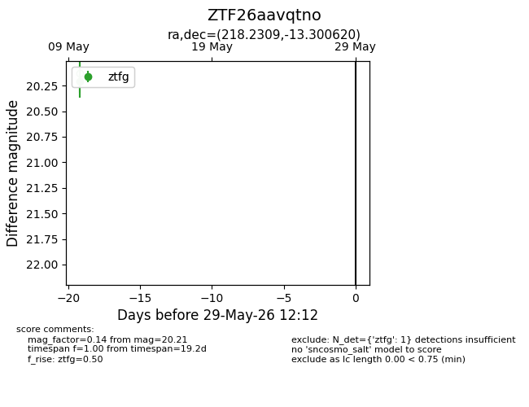
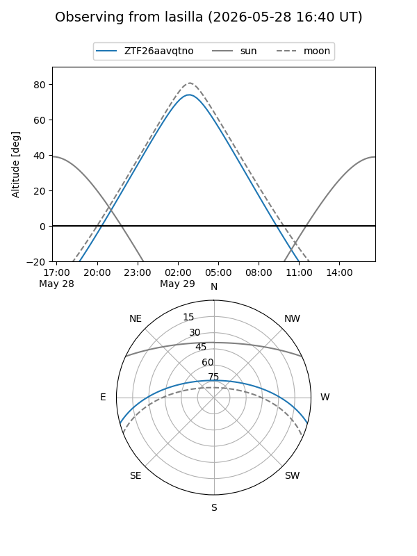
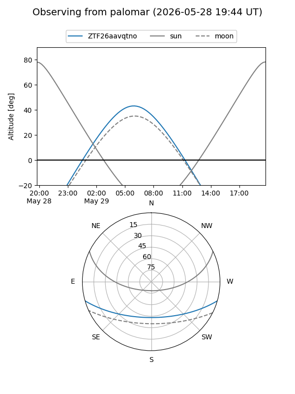

ZTF26aavqtno
Target ZTF26aavqtno at 2026-05-29 12:16
Aliases and brokers:
lsst-FINK: link
lsst-Lasair: link
lsst-ALeRCE: link
ztf-FINK: link
ztf-Lasair: link
ztf-ALeRCE: link
alt names
ZTF26aavqtno (ztf,fink_ztf)
Coordinates:
equatorial (ra, dec) = 218.2309,-13.30062
equatorial (HMS+DMS) = 14:32:55.43,-13:18:02.23
galactic (l, b) = (337.4771,+42.66213)
Flags:
Photometry:
last ztfg=20.21
1 ztfg detections
Lightcurve

Visibility


Additional plots